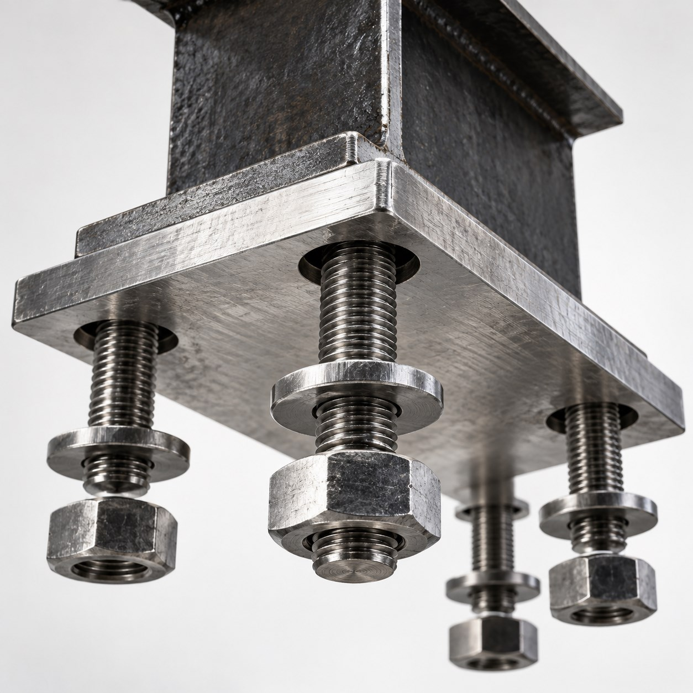
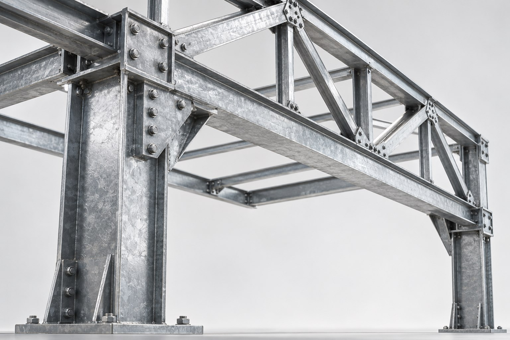
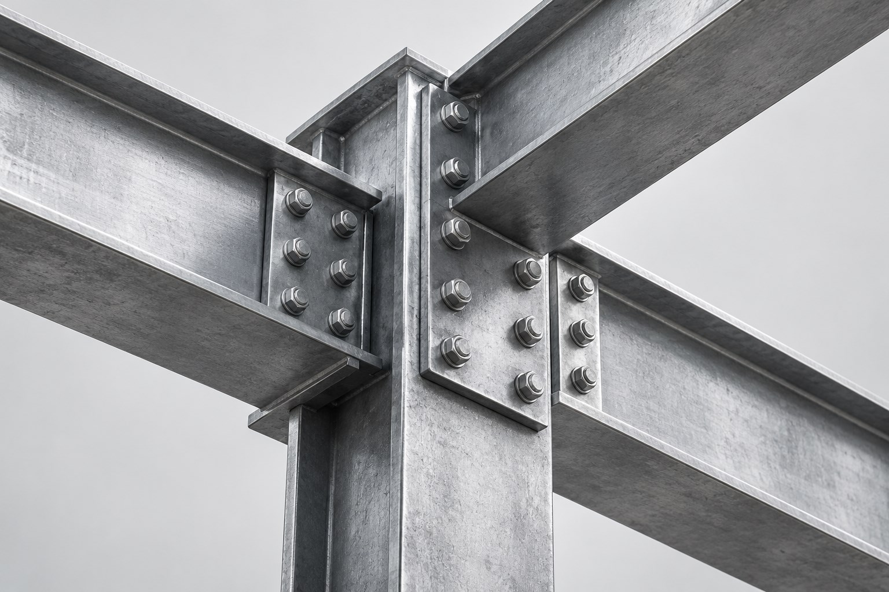
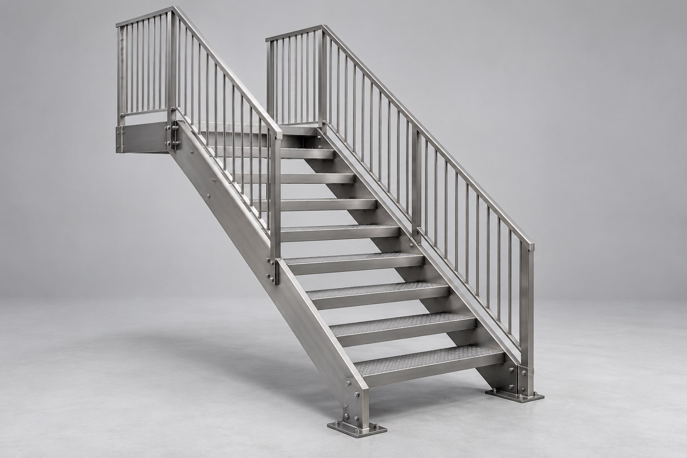
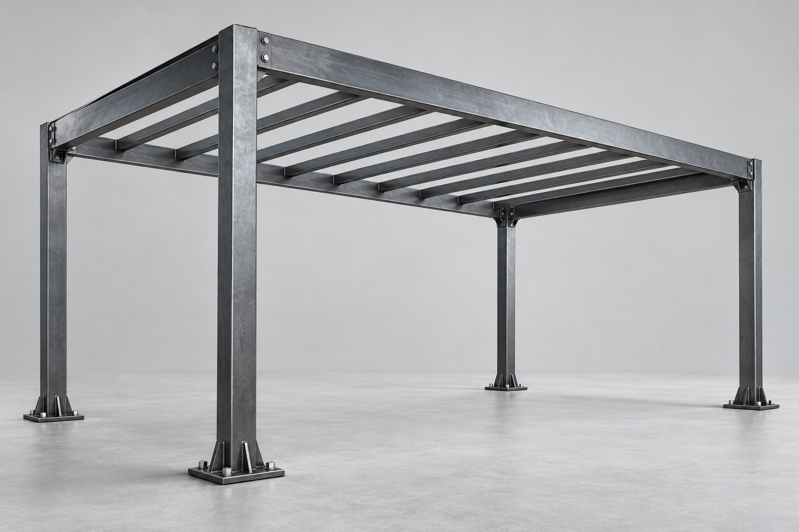
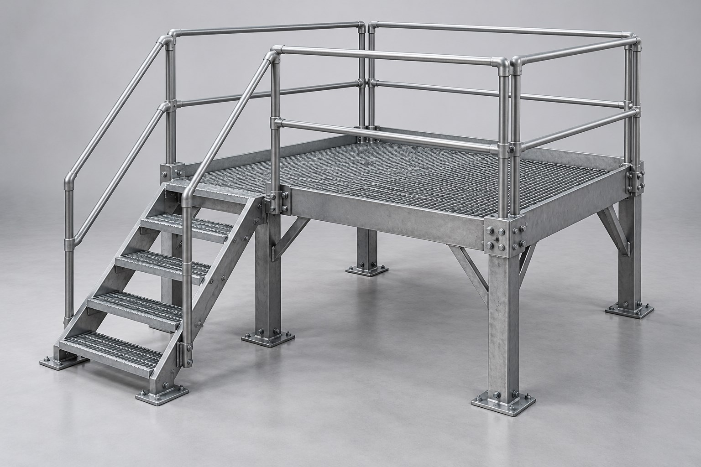
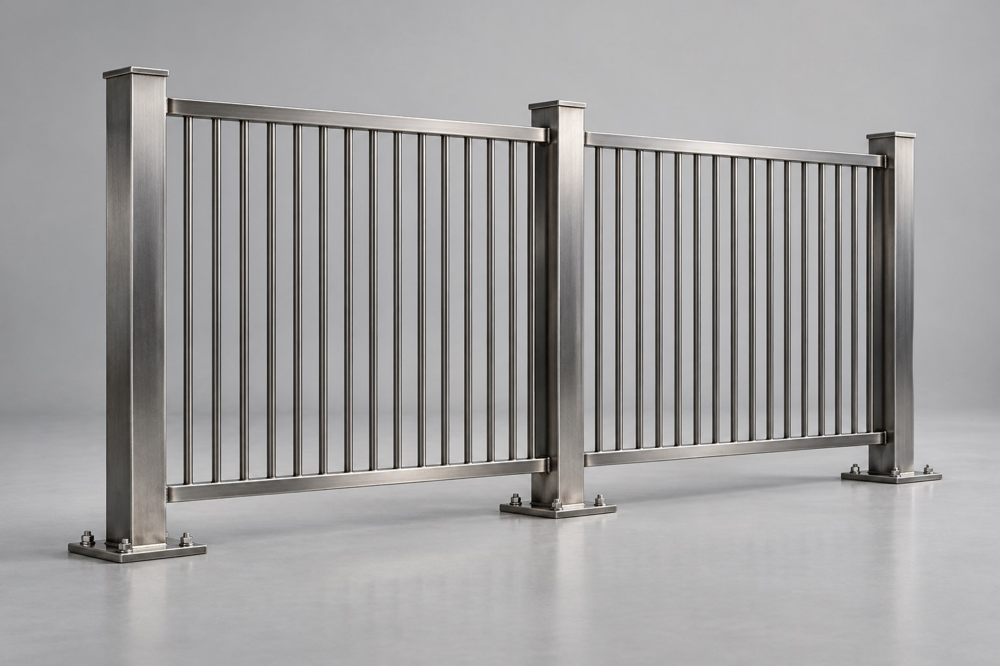

Задача
Обсуждаем назначение, размеры и условия эксплуатации конструкции.
Металлоконструкции, на которые можно положиться


01 / КАРКАСЫНесущие системы для промышленных и коммерческих зданий

02 / НЕСУЩИЕ ЭЛЕМЕНТЫВыверенная геометрия для надёжной основы

03 / ЛЕСТНИЦЫМарши, площадки и ограждения из стали

04 / НАВЕСЫЛаконичные конструкции для открытых пространств

05 / ПЛОЩАДКИПромышленные платформы, настилы и переходы

06 / ОГРАЖДЕНИЯЧёткий ритм линий для участка и городской среды
Сгенерированные визуализации показывают типы конструкций и не являются фотографиями выполненных объектов ЕМК.
Примеры компаний строительной отрасли Екатеринбурга. Партнёрство с ЕМК не подтверждено.
В толщине стали. В ровной кромке.
В точной посадке каждого болта.
Материал под задачуВыбор профиля, толщины и защитного покрытия.
Продуманные соединенияГеометрия узлов, крепёж и удобство сборки.
Каждая деталь на местеСогласованные чертежи и понятный состав работ.
Обсуждаем назначение, размеры и условия эксплуатации конструкции.
Определяем материалы, конструктив и состав необходимых работ.
Согласовываем чертежи, стоимость и сроки изготовления.
Изготовление и подготовка к доставке. Монтаж — по согласованному плану.
Опишите проект — от первых размеров
до требований к готовой конструкции.